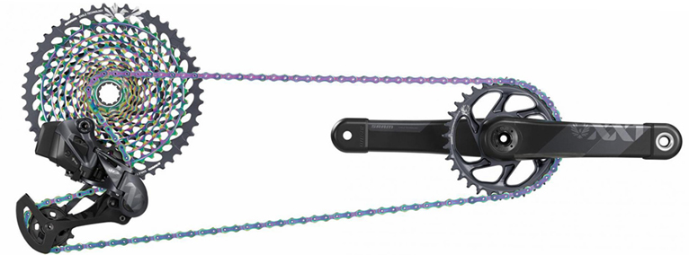

Історія створення
Хто створив
Офіційною датою винаходу велосипеда вважається 1817 рік, коли німецький професор барон Карл Дрез створив макет «машини для бігу».Барон Карл Дрез — німецький винахідник. Серед його винаходів велосипед і друкарська машинка. Винайшов також залізничний засіб пересування, що був названий «дрезиною».
Як створив
Перше значне вдосконалення «машини для бігу» відбулося в 1839 році, коли шотландський коваль Кіркпатрік Макміллан приробив до нього педалі й сідло. Ось тоді велосипед став практично таким, яким ми знаємо його сьогодні. Він приводився в рух із допомогою педалей, з’єднаних із заднім колесом металевими стрижнями. Кермо дозволяло повертати переднє колесо вправо і вліво.
Будова та частини велосипеду

Велосипед складається з рами, на яку кріпляться колеса, кермо з вилкою керма, що повертає переднє колесо, педалі на шатунах і сідло, зазвичай з амортизатором. Педалі крутять колесо через ланцюгову передачу, вал або ремінну передачу. Велосипед, також, обладнаний ручним чи ножним гальмом.
Рама
Як і автомобіль, велосипед має несучу конструкцію, на яку кріпляться всі інші елементи. Називається ця
конструкція рамою. Саме видом рами обумовлюється призначення велосипеда, а її якість впливає на
термін його служби.
Рама являє собою ромбовидний остров, зварений з таких елементів:
- Передні труби (верхня, нижня).
- Підсідельна труба.
- Верхні пір'я.
- Нижні пір'я.
- Дропаути
- Кареточний стакан
- Рулевий стакан
До інших елементів належать:
- Колеса
- Вилка
- Кермо
- Трансмісія
Колеса
Важливою частиною велосипеда є колеса. Вони утримують раму у вертикальному положенні і за рахунок обертання приводять велосипед у рух. Колесо влаштоване досить просто. Воно складаються з втулки, ободу, камери і покришки.
Втулка - центральна частина колеса, що складається з осі, підшипників і шайб. Головне завдання втулки - завдання і підтримка крутячого моменту. У задньої втулки внутрішній пристрій складніший, ніж у передньої, оскільки вона бере участь у розкручуванні колеса. На дорожніх моделях простої конструкції, в задню втулку додатково вбудовується гальмівний механізм. Будова заднього колеса швидкісного велосипеда відрізняється тим, що на втулку кріпляться зірочки перемикання передач. У планетарні втулки також поміщають прихований механізм для перемикання передач.
Обід - кільце, яке кріпиться до втулки через спиці. Геометрія ободу і рівень натягнення спиць визначають стійкість колеса до динамічних навантажень і пошкоджень. Ободи для велосипедного колеса роблять з алюмінію, а спиці - з легких сплавів. Головки для регулювання натягнення спиць розташовуються з боку обода.
Камера (шина) - гумовий порожній виріб, який лягає на обід і накачується повітрям. Зверху на камеру накладається покришка. Таким чином, єдиним елементом камери, який контактує із «зовнішнім світом», є ніппель, через який камера накачується повітрям. Щоб шина не пошкодилася об головки спиць, на внутрішню частину ободу накладається гумовий фліппер.
Покришка - оболонка, що захищає шину від механічних впливів і створює зчеплення колеса з дорогою. Покришка складається з бортів, боковин і протектора.
Вилка
Управління велосипедом здійснюється через рульовий вузол. Він складається з таких елементів:
- Вилка
- Рульовий стовпчик
- Винос керма
- Безпосередньо кермо
Будова виделки велосипеда не відрізняється особливою складністю. Вилка є проміжним вузлом між переднім колесом і кермом. За допомогою штока вона встановлюється в передню склянку рами. Кермо вставляється всередину вилки, а колесо кріпиться до неї через вушки ніг (дропаути). Щоб вилка вільно оберталася під час повороту, в склянку встановлюють рульову колонку. До її складу входять: верхня і нижня чашки, підшипники, а також фіксуючі кільця. Чашки або запресовуються, або вкручуються по внутрішній різьбі склянки. Кільця встановлюються на шток, який міцно фіксується в рульовій колонці.
Кермо
Кермо складається з двох елементів: горизонтальної труби і вертикального штока (виносу).
Винос являє собою проміжну деталь між горизонтальною трубою керма і регулювальною трубою. Він обумовлює відстань між кермом і рамою. Чим довший винос, тим більш горизонтальним буде положення велосипедиста під час їзди. На велосипедах простої конструкції винос не ставиться.
Трансмісія
Трансмісія належить до елементів, без яких не поїде велосипед. Будова цього вузла, порівняно з іншими, відрізняється складністю і великою кількістю механізмів. До останніх належать:
- Каретка
- Шатуни
- Педалі
- Ланцюг
- Монетки
Кареточний вузол розміщується в нижній склянці рами. Будова каретки велосипеда нескладна. Вона служить сполучним вузлом між передніми зірками і шатунною парою. За рахунок фіксованих підшипників, на які посаджена наскрізна вісь, каретка забезпечує стабільне обертання педалей, без провертання. Каретки бувають двох типів: картриджна і з відкритими підшипниками.
Шатуни покликані з'єднати каретку з педалями. Вони можуть кріпитися на квадратне або шлицеве кріплення. Шатуни йдуть у комплекті з передньою зірочкою (або зірочками), яка кріпиться на одному з них (правому).
Педалі - це опори для ніг, які через шатуни передають механічну енергію на каретку. Залежно від області застосування, педалі бувають таких видів:
Ланцюг відіграє роль сполучної ланки між передніми (провідними) і задніми (відомими) зірками. Будова швидкісного велосипеда відрізняється тим, що у нього по кілька зірок спереду і ззаду. За допомогою перемикачів, відбувається перекидання ланцюга з однієї зірки на іншу.
Перемикачі керують монетками, розташованими на кермі. Контакт між монетками і перемикачами відбувається через приводні троси. Види перемикачів швидкостей на велосипеді нечисленні: монетки можуть бути важельними і барабанними. На велосипеді з однією передачею, перемикачі відсутні, а спереду і ззаду розташовується по одній зірці.
Різновиди велосипедів.
Гірський велосипед
Цей тип велосипеда не потребує вступу. Очевидно, вони були створені для їзди поза дорогами. За призначенням цей тип можна розділити на велосипеди для даунхілу , фрірайду , ендуро , трейл. Зазвичай вони оснащені 26/ 27,5/ 29 дюймовими колесами, широкими шинами з агресивним протектором та одним або двома амортизаторами. Переважно мають велику кількість передач, а завдяки своїй міцності та значній універсальності вони стали хорошим вибором також для їзди по місту.

Шосейний велосипед
Як випливає з назви, призначений він для їзди по асфальту. У велосипеда великі 28-дюймові колеса з вузькими (зазвичай 23-28 мм) і гладкими шинами.
Кермо дорожнього велосипеда характерно вигнуте, що дозволяє зайняти більш аеродинамічне положення (цей вигин називають «баранячими рогами»). Гальмування і перемикання передач відбуваються за допомогою спеціально розроблених під таке кермо важелів — дуалів, які дозволяють виконувати обидві ці функції не знімаючи руки з керма. Залежно від геометрії рами, типові шосейні велосипеди можна розділити на дві групи:

Велосипед BMX
Мрія багатьох дітей та пристрасть багатьох дорослих.
BMX створений для того, щоб робити трюки та стрибати на спеціально підготовлених доріжках і в міських умовах. Його характерною особливістю є невеликі 20-дюймові колеса, височенне кермо і спеціальні трубки, встановлені на осі коліс, що дозволяють робити прикольні трюки.